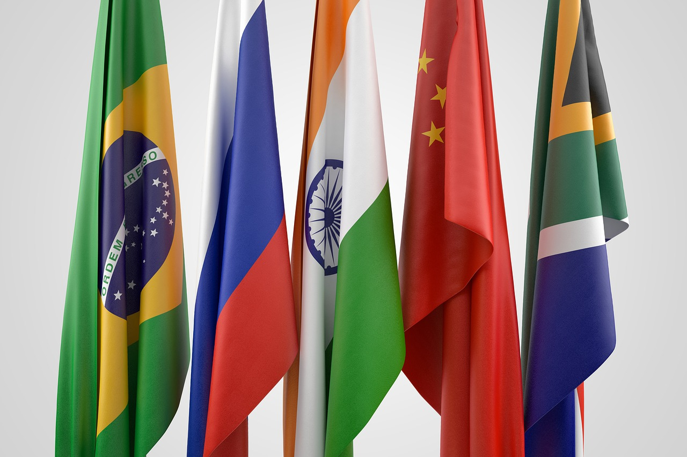

O que é o BRICS
BRICS é um agrupamento de países de mercado emergente em relação ao seu desenvolvimento econômico. Trata-se de um acrônimo da língua inglesa que é geralmente traduzido como "os BRICS" ou "países BRICS" ou, alternativamente, como os "Cinco Grandes"
História
O BRICS é um agrupamento econômico atualmente composto por cinco países: Brasil, Rússia, Índia, China e África do Sul. Não se trata de um bloco econômico ou uma instituição internacional, mas de um mecanismo internacional na forma de um agrupamento informal, ou seja, não registrado burocraticamente com estatuto e carta de princípios.
Em 2001, o economista Jim O'Neil do banco Goldman Sachs formulou a expressão BRICs (com “s” minúsculo no final para designar o plural de BRIC), utilizando as iniciais dos quatro países considerados emergentes, que possuíam potencial econômico para superar as grandes potências mundiais até 2050.
O que era, no início, apenas uma classificação utilizada por economistas e cientistas políticos para designar um grupo de países com características econômicas em comum, passou, a partir de 2006, a ser um mecanismo internacional. Isso porque Brasil, Rússia, Índia e China decidiram dar um caráter diplomático a essa expressão na 61º Assembleia Geral das Nações Unidas, o que propiciou a realização de ações econômicas coletivas por parte desses países, bem como uma maior comunicação entre eles.
A partir do ano de 2011, a África do Sul também foi oficialmente incorporada ao BRIC, que passou então a se chamar BRICS, com o “S” maiúsculo no final para designar o ingresso do novo membro (o “S” vem do nome do país em inglês: South Africa).
Durante a V Cúpula do BRICS, em 27 de março de 2013, os países do eixo decidiram pela criação de um Banco Internacional do grupo, o que desagradou profundamente os Estados Unidos e a Inglaterra, países responsáveis pelo FMI e Banco Mundial, respectivamente.
BRASIL
No dia 13 de abril de 2011, em Sanya, ilha chinesa de Hainan, aconteceu a última reunião dos países membros do BRICS (Brasil, Rússia, Índia, China e África do Sul). Entre os diversos assuntos debatidos, dois destacaram-se: a criação de uma cesta de moedas para substituir a moeda americana em negócios diretos realizados pelo grupo e a introdução de regras internacionais mais transparentes para evitar crises como a de 2008. Qual a importância do Brasil nestas discussões?
Em 2010, o PIB brasileiro foi igual a US$ 2,19 trilhões. Esse número só não é surpreendente porque é quase igual ao de países como a França, que embora possuindo só 6,34% do território brasileiro, tem seu PIB igual a US$ 2,16 trilhões. Igual em relação ao Reino Unido, que possuindo só 2,84% da área do território brasileiro, possui PIB de US$ 2,189 trilhões. Os EUA e a China, que possuem território grande como o Brasil, têm respectivamente, PIB de US$ 14,7 trilhões e U$ 5,88 trilhões. O Japão, US$ 4,33 trilhões; Índia US$ 4,04 trilhões, Alemanha US$ 2,96 trilhões e Rússia US$ 2,22 trilhões. Preservada a proporcionalidade, portanto, o PIB brasileiro apresenta números tímidos, embora promissores. Por essa razão, a inserção do Brasil como player internacional sempre deve ser vista cuidadosamente.
FONTERÚSSIA

Rússia em relação ao clube dos BRICS. Apesar de o país ter sido o primeiro a sugerir a ideia de encontros de alto nível entre os quatro países do BRIC, sua atitude inicial foi bastante reservada com papel muito limitado observado para o grupo. Entretanto, ao longo do tempo a Rússia passou a ver os BRICS (com a entrada da África do Sul em 2011) como principal fórum para coordenação política e econômica e como mecanismo essencial para a realização de sua política externa. Outro aspecto considerado neste artigo é o argumento muitas vezes apresentado por observadores externos que tentam sugerir que o BRICS é um projeto "deadborn child" [natimorto] ou que as divergências estão prevalecendo sem pontos em comum encontrados. Assim, as posições de cada um dos países BRICS nos aspectos da economia, finanças, comércio e política global são analisadas com as abordagens iniciais da proclamada "compatibilidade das economias dos BRICS". A autora revisa alguns dos exemplos de sucesso de coordenação dos cinco países dentro de outras instituições internacionais e os resultados alcançados, mas também olha para os casos nos quais os BRICS demonstram abordagens diferentes para um problema. No entanto, esta análise sugere que os BRICS, apesar de não terem posições e interesses idênticos, acreditam serem capazes de promover uma ordem mundial melhor, mais justa e mais inclusa.
FONTEÍNDIA

A Índia merece destaque pela produção de manufaturas - ainda que em menor proporção que os chineses – e principalmente pelo desenvolvimento do setor de serviços, desde os mais especializados e que exigem maior qualificação da mão de obra até os call centers, em que a fluência na língua inglesa é o maior requisito para esse posto de trabalho.
A Índia tem uma população superior a 1,3 bilhão de pessoas e foi o país que mais contribuiu para o crescimento da população mundial nos últimos anos (com um crescimento médio anual de 16 milhões de habitantes). Em 2030, deverá se tornar o país mais populoso do mundo, principalmente por não contar com uma política de natalidade e pela cultura predominante do país estar relacionada ao hinduísmo, que considera os nascimentos sagrados devido à crença nas reencarnações: restringir um nascimento é compreendido como limitar a evolução espiritual de uma alma.
FONTECHINA

A China juntamente com os outros integrantes do grupo BRICS reitera a importância de um desenvolvimento econômico inclusivo e transparente, uma maior representatividade nas instituições financeiras internacionais, um apoio ágil e flexível às economias em desenvolvimento e a democratização das relações internacionais. Tais exigências reforçariam uma prática de cooperação inovadora já ensaiada pela China, Brasil, Índia e África do Sul conhecida como Cooperação Sul-Sul. Através da análise das relações chinesas com o mundo em desenvolvimento, foi constatado que o fato de a China contar com décadas de relacionamento com os países em desenvolvimento, com os quais compartilha um passado comum de domínio imperialista (conhecido como o “século da humilhação”), facilitou sua inserção nesses países.
FONTEÁFRICA DO SUL

Durante a sua terceira cúpula em 2011, a África do Sul aderiu formalmente ao grupo, que então se tornou BRICS. A sua adesão ao grupo, no entanto, é intrigante, uma vez que a África do Sul é muito menor do que os outros BRICS em termos de sua economia, território e população. Por que a África do Sul foi convidada a se juntar ao grupo? Este artigo argumenta que, para responder a esta questão, é necessário considerar a dimensão simbólica do grupo. Mesmo que o grupo possa ser útil para aprofundar as relações entre os seus membros e coordenar posições em foros multilaterais, os países do BRICS têm como objetivo principal usar o BRICS como símbolo da maior relevância do "Sul Global" em comparação ao "Norte Global". A este respeito, a África do Sul se juntou ao grupo para desempenhar o papel de representante da África, reforçando assim a imagem do BRICS de representante do "Sul Global". Com um país africano, o "Sul Global" estaria "mais bem" representado no BRICS. Embora o status da África do Sul de representante da África seja controverso, este artigo argumenta que a África do Sul é o país mais adequado para desempenhar este papel.
FONTE